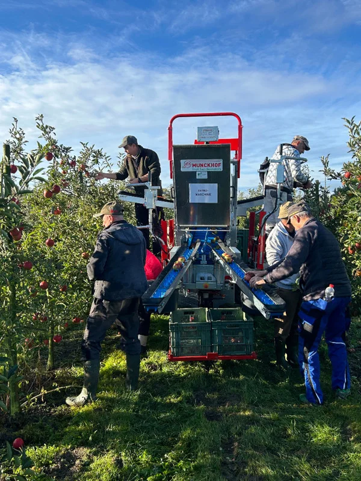

Autonomous workforce for fruit farms
We build and operate an autonomous robotic service that harvests, thins and takes on other orchard tasks. We start with the biggest market: apples.
See the machine work
Fruit farm work can now be automated
Labour costs rise faster than fruit prices
This cuts into the profits of fruit farmers all over the world. Manual work takes up to 40 % of production costs.
Seasonal workers are scarce
Fewer workers come for the season as the economy in their home countries improves.
Hiring workers costs hidden time
Every season the farmer recruits workers, finds housing, organises transport and does the paperwork, before the harvest starts.
Works outdoors without harming the fruit
Built for rain, changing light and night. Cameras find every apple, and the hand cuts the stem, so fruit and trees stay unharmed.
Faster than people, on the farmer’s terms
Twice as fast as hand picking per hectare. Farmers order the finished work; there is no robot to buy.
Affordable to build
Robot arms, cameras and computing cost a fraction of what they did, so we build from standard parts.

How the machine works: one apple from tree to bin
Tully H2 Cobot harvester · Rev 1
8 six-axis cobots on height carriages and in/out slides, a 1.9 m bidirectional body that crabs into the next alley, an on-board sorter and two autonomous straddle carriers that loop through a depot. Built to turn in a 2–3 m headland.
One platform, eight arms
Eight arms ride four vertical rails around an internal fruit line. Every camera writes into one shared state model of tracked apples; one scheduler hands out targets; each arm runs its own real-time node. If an arm faults, the others take over its zone.
Driving the alley
The platform follows the row on its own with RTK-GNSS and LiDAR, crawling slowly enough for every arm to keep working. The map shows where the machine and its bin units are in the block right now.
Seeing every apple
Colour and depth cameras on the corner masts look forward along the canopy, so each apple is seen from several angles before an arm arrives. Every view feeds one state model: an apple with a stable ID, a 3D position, colour, size and stem direction.
The pick cycle
Each arm repeats the same cycle: a collision-aware transit to a 15–25 cm standoff, a visually servoed approach, colour and shape verification, a grip with contact verification, detachment and release into the transport tube. The highlighted state is what the arm on screen is doing now.
Cut, or skip and flag
When the stem can be seated, a guarded scissor cuts it, leaving a short, intact stalk that cannot puncture other fruit in the bin. There is no twist and pull: when a stem cannot be cut, the hand lets go, backs out and flags the apple as a hard case for hand-picking. The counts are from this simulation run.
From hand to bin
Picked fruit descends through a soft tube to a buffer belt, then passes a 360° camera sorter. Premium apples are lowered gently into the bin, which follows its fill level; industrial fruit goes to its own container.
Bins that drive themselves
The 300 kg bins flow through the orchard independently of the harvester. When a bin is full, its unit decouples, drives to the staging area, picks up an empty bin and comes back, while buffers on the master keep the arms picking.
Turning at the row end
At the end of a row the arms stow, the machine drives clear of the canopy and moves into the next alley. Each step lights up as the machine works through it.
Through the night
Work lights and the lights in each hand let the machine keep picking after dark, which is how it reaches 20 operating hours a day. The panel shows the live energy draw.
Technical details
Software architecture and compute
Three principles govern the software. First, all perception pipelines write into a single shared state model, which holds tracked fruit with stable IDs, grades and approach vectors alongside the canopy occupancy grid; one global scheduler owns task allocation. Second, each robotic arm runs independently on its own real-time node for inverse kinematics, trajectory generation, visual servoing and grasp state, and completes its assigned targets without further negotiation. Third, the system is fault-tolerant: if an arm hits a fault, such as an unreachable target, the machine keeps working at a reduced rate and its work zones are redistributed.
Control and computation run on a hybrid architecture: an NVIDIA Jetson AGX Orin and a Beckhoff CX7000 PLC. AI inference, neural vision pipelines and global motion planning need the parallel compute of the GPU, which cannot guarantee non-preemptible determinism. The PLC runs the deterministic real-time control loops, enforces safety-rated interlocks and keeps actuation reliable independently of the AI stack.
Stages communicate by publish/subscribe over bounded queues and share no state. Several loops run at their own rates, so no stage waits on another. Because every stage already publishes to the bus, observability and data capture are just another subscriber: telemetry, a black-box recorder for offline replay, GNSS-tagged yield and grade data per row and bin for the grower, and automatic capture of hard cases for retraining.

Orchard navigation
To work in orchards, the system must navigate the fruit rows. The chassis must meet agricultural constraints that indoor automated vehicles never face: instead of flat floors and controlled lighting, orchards bring unpaved terrain, lateral slopes, changing soil friction and variable weather.
The first solution uses a platform from Frucotec, developed for apple orchards; the team has offered full access to and support for the vehicle. Autonomous navigation comes from Nature Robots, whose lightweight solution for vineyards, which share the row architecture of apple orchards, includes industrial-grade compute, RTK-GNSS and LiDAR (Nature Robots OrchVine Nav). Other platforms and navigation systems will be benchmarked too. The footprint slightly exceeds a euro pallet for compatibility with standard bulk bins and freight, while staying manoeuvrable in high-density orchards. Field-exposed components are rated IP65 or better.
For reach across the whole canopy, each side of the harvester has two 2.5 m vertical rails, each carrying two articulated arms: eight manipulators in total. The rails move the arms vertically; with the arm reach, the system covers the full height of standard 3 m trees.
Camera stack
Besides the cameras in the hands, the machine carries twelve perception cameras. Six colour and two depth cameras sit on one slim mast at each leading corner; two look-ahead cameras map the canopy before the masts reach it, and two look-back cameras check the canopy the arms have just worked. The gap between the machine and the leaves is only about 0.45 m, so all cameras are yawed about 30° outward from the driving direction. The line of sight to the canopy grows to about 0.9 m, the arms and columns stay out of view, and each apple passes through every camera's view from several angles as the machine advances.
| Role | Camera | Count | Position, per side |
|---|---|---|---|
| Canopy colour, bottom / middle / top | Luxonis OAK-1 PoE, 12 MP, IP67 | 6 | Corner mast at 0.55 m, 1.45 m and 2.30 m; portrait |
| Canopy depth | Luxonis OAK-D Pro PoE, active stereo, IP65 | 2 | Corner mast at 1.25 m |
| Look-ahead | Luxonis OAK-1 PoE, IP67 | 2 | Front corner, about 1.6 m, looking forward along the canopy: fruit load, obstacles and the row end, ahead of the arms |
| Look-back | Luxonis OAK-1 PoE, IP67 | 2 | Rear corner, about 1.6 m, looking back along the canopy: fruit left behind, damage and flagged hard cases |
| Wrist | 3D camera with lights in each gripper | 8 | Centre of the hand |
| Fingertips | Miniature RGB | 24 | Three per hand |
| Sorter | RGB cameras, diffuse LED tunnel | 4 | Sorting module, 90° apart around the fruit: one 360° view |

Perception pipeline and target selection
Once the base enters the orchard and detects the first tree, the perception pipeline starts: the machine senses the canopy, detects and characterises fruit, accumulates it in a state model, decides what each unit does next, executes and observes the result. No stage waits on another.
The perception and control stack is a sequence of layers, pipelined so the acquisition layer already works on frame t+1 while planning works on the world state from frame t. Calibrated cameras stream to a central compute hub, where frames are normalised and batched into one [N, 3, H, W] tensor; a dropped frame is filled with the previous one or the batch profile is adjusted. A real-time instance-segmentation model served on NVIDIA Triton (YOLO-seg family, RT-DETR with a mask head, or a student distilled from SAM-generated labels) returns each apple's mask, box, confidence and centre, and also segments stems, branches, trunks and leaves. Branches feed collision avoidance; stems feed orientation. Depth is read directly from the depth sensors.
Everything below segmentation writes into the state model: a registry of tracked apples, each with a stable ID, a filtered 3D position and accumulated characteristics. Combining views over a short time gives much better diameter and occlusion estimates than any single frame. Colour is measured in the CIELAB a* channel after masking highlights, shadows and leaves; size comes from RANSAC sphere fits on depth; orientation from stem segmentation, ellipse fitting and the calyx depression. Candidate approach vectors are sampled over a hemisphere around each fruit and checked by ray-casting a gripper-sized cylinder through the occupancy grid.
The machine visits a subset of targets within a time budget to maximise collected value. Apples that are hard to grasp or below the wanted quality are skipped, using leading indicators: colour threshold, size, visible defects, stem and orientation, distance and reach, the approach corridor and the distance to neighbouring fruit. A combined threshold selects or rejects each apple, and fast rejection is the key. The task planner then sets the pick sequence from the current state model and recalculates on every cycle, because the orchard changes with every harvested fruit and every metre the platform advances.

Fruit retraction: pick cycle and motion control
Eight 6-DoF cobot arms do the picking, two on each of the four rail columns; with the 2.5 m rails and the arm reach they cover the whole fruiting wall up to 3 m. The cycle has six standard phases:
- Collision-aware transit from the home pose to a 15–25 cm standoff
- Visually servoed linear approach
- Colour and shape verification
- Gripping and contact verification by force–torque feedback
- Cultivar-specific detachment
- Release into the transport tube
Inverse kinematics uses the redundant seven-axis chain (six arm joints plus the rail) to keep the elbow away from the canopy and the joints away from their limits. Jerk-limited, time-optimal trajectories keep the platform and cameras steady, and an occupancy grid built from depth frames and labelled with branches and trunks protects the arm from structural obstacles.
Open-loop motion from long-range observations is prone to estimation errors, so the final approach switches to image-based visual servoing. A wrist-mounted camera tracks the target; a lightweight network finds the fruit's centre and apparent radius in a cropped region, and the controller drives the offset and radius error to zero at 30–60 Hz, streaming Cartesian velocity commands to the arm.
Gripper
Commercial agricultural end-effectors have clear limits, so Tully is developing a specialised multi-finger gripper. It has three tendon-driven gripping fingers and a central cutting finger with a guarded scissor. Each gripping finger carries a miniature RGB camera that checks the colour of the hidden back of the apple; if it fails, the apple is released and logged for a later pass. A 3D camera and lights at the centre enable visual servoing and night work.
Manual harvesting relies on a two-handed twist. The robot grasps and cuts in one motion instead, which prevents stem pull-out and allows an immediate hand-over to transport. Cutting also removes rigid protruding stems, as in 'Fuji', that puncture neighbouring fruit in bulk bins, which cooperatives reward financially.
There is deliberately no twist-and-pull fallback, which risks damaging the fruiting spur, pulling the stem out and shaking neighbouring apples loose. When a stem cannot be seated or the cut fails twice, the hand opens, backs out and the apple is skipped and flagged as a hard case, for hand-picking and for training the next model.

Intra-system fruit transport and sorting
After detachment, fruit drops into a flexible polymer tube beneath the end-effector and descends under control to a central buffer with an active bottom belt. From there a conveyor feeds an inline sorter, a miniature version of a packinghouse grader: four RGB cameras, 90° apart around the fruit, image each apple through 360° and finds defects a few millimetres across, including on the hidden rear. Correct grading avoids heavy financial penalties; faulty apples go to industrial grade, which is also paid.
Premium apples are lowered into the bulk bin by a vertical conveyor whose height follows the fill level, preventing impact damage. These standard bins hold 300 kg and go on to the commercial sorting and storage plants. Industrial apples go directly into a side container, where minor pressure marks do not change their value.

Orchard logistics and the Hive
To keep the harvest going, the 300 kg bins must flow through the orchard independently of the harvester. When a bin reaches its 300 kg limit, the system decouples itself: the master's lowering mechanism retracts clear of the bin, the slave drives autonomously to a central staging area, picks up an empty bin and returns to the harvester without manual intervention. Meanwhile harvesting continues: the master shifts toward the secondary grade and its conveyor lines buffer the fruit picked in between. The buffer is sized for the average transit and docking time, so bin exchange does not stall the arms.
How the interlock works. Master and slave are coupled through three independent layers, and every change of state needs all three to agree. Mechanically, guide cones centre the slave and two latch pins lock it to the master, each pin with two sensors that must agree. A docking connector carries the E-stop chain and the latch signals into the master's TwinSAFE logic, so a stop on either machine stops both. In software, the two exchange their states and a 10 Hz heartbeat over the orchard Wi-Fi or private LTE/5G; LoRaWAN carries status only.
How the slave operates. Docked, it is in follow-me mode: the master leads and the pair moves as one vehicle. Undocked, it navigates on its own with RTK-GNSS, LiDAR and a safety scanner, at up to 1.5 m/s on alleys and the field road and 0.5 m/s near the master, and always yields to the master and to people. A second slave waits on standby behind the master, so a swap never leaves the master without a bin for long.
Conditions for a swap or a move
Each action starts only when all its conditions hold. Start values for field trials.
| Action | Trigger | Conditions, all must hold | Slave | Master |
|---|---|---|---|---|
| Dock | Swap requested, or start of shift | Slave on standby behind the master; docking slot free; master at 50 m/h or less; bin conveyor raised; protective fields clear; heartbeat OK | Drives in at 0.5 m/s or less on the guide cones; locks both pins | Lowers the bin conveyor once both pins report locked |
| Follow | Docked | Both pins locked; connector made; heartbeat OK | Follows the master's speed and steering | Leads; fills bin and industrial container |
| Swap request | Bin at 300 kg, industrial container full, low battery, or operator | None; starts the undock below | Waits for release | Fills to the limit, then buffers on the belts |
| Undock | Swap request | Standby slave in place; no headland turn; filling stopped; bin conveyor raised; buffer has room; exit path clear | Unlocks when released and drives out | Keeps picking into the buffer; the standby docks once the tunnel is clear |
| Move to staging | Undocked with a full bin | Route clear; master not turning in the same headland lane; heartbeat OK | Drives to the staging area at up to 1.5 m/s | Keeps picking |
| Bin exchange | At the staging area | Drop bay free; hoist clear | Sets down the full bin, picks up an empty one | None |
| Return | Empty bin seated | Route clear; headland lane free | Waits behind the master on standby | None |
| Headland turn | Row end | Arms stowed; docked slave latched | Docked: rides latched. Undocked: waits outside the turn lane | Turns into the next alley |
| Stop | Heartbeat lost over 300 ms, E-stop, protective field, latch sensors disagree | Any state | Docked: stops with the master. Undocked: stops and waits | Safe stop when docked; holds the arms if no bin is docked and the buffer is full |


The Hive
The Hive connects every robot in an orchard. More and more of the orchard's work will be done by robots: harvesting, thinning and pruning by Tully's own machines, and drone spraying, irrigation, weeding and mowing, scouting and bin logistics by Tully or by partners. Each machine runs Tully OS on board for perception, autonomy, safety and its task runner. The Hive keeps one map of the orchard, tree by tree; turns the farmer's and agronomist's goals into tasks for the right robot at the right time; shares charging, logistics, connectivity and remote support across the fleet; and opens an API to partner robots and farm software.
The Hive plans; it never sits in a real-time control path, and every machine keeps working safely if its link drops. An eSIM uplink updates the central cloud and gives the farmer a live view of operations, but harvesting does not depend on it.

User experience
Farmers order the service in the browser. During onboarding they record their crops, cooperative and orchard area, and draw the geofenced boundaries of their blocks on a map, so the system knows exactly where to operate and navigation needs no manual setup in the field.
The farmer never operates the robot. Tully personnel handle deployment, positioning and start-up on site, and a central remote team monitors every machine. Farmers book and manage service appointments, review farm profiles and follow harvesting progress, yields and quality in real time on the Tully cloud platform. Safety protocols let farm workers and operators work close to the machines.
Full architecture

Bill of materials: master and slave
| Master | Amount | Total |
|---|---|---|
| Frucotec base | 1 | 7,900.00 € |
| Nature Robots autonomous suite | 1 | 15,000.00 € |
| DOBOT CR3A | 8 | 110,400.00 € |
| Gripper, thinning and harvesting (incl. ToF) | 8 | 12,000.00 € |
| NVIDIA Jetson AGX Orin | 1 | 3,316.14 € |
| DepthAI OAK-1 PoE | 6 | 2,000.00 € |
| OAK-D Pro (active stereo) | 2 | 1,049.99 € |
| Battery, 24 kWh | 1 | 4,000.00 € |
| PLC Beckhoff CX7000 | 1 | 747.90 € |
| Livox Mid-360 (safety LiDAR) | 1 | 655.42 € |
| Internal transport system, 8 arms | 1 | 30,000.00 € |
| Sorter | 1 | 5,000.00 € |
| Cables, columns and other parts | 1 | 5,000.00 € |
| Total | 198,019.46 € |
| Slave | Amount | Total |
|---|---|---|
| Frucotec base | 1 | 7,900.00 € |
| Nature Robots autonomous suite | 1 | 15,000.00 € |
| NVIDIA Jetson AGX Orin | 1 | 3,316.14 € |
| PLC Beckhoff CX7000 | 1 | 747.90 € |
| Cables, columns and other parts | 1 | 2,000.00 € |
| Total | 28,964.04 € |
Founders who have built robots and companies before
 Co-founder & CEO
Co-founder & CEODaniel Sattel
A second-time founder who scaled an IoT mobility company to seven-figure revenue. Leads company building, fundraising and commercialisation.
 Co-founder & CTO
Co-founder & CTOHarsh Munshi
More than 15 years in computer vision, including perception for autonomous systems. Leads the technical architecture: perception, robot control and on-board computing.
 Co-founder & CPO
Co-founder & CPORaphael Joppi
Takes robotic systems from concept to deployment, with a family background in apple farming. Leads product development, from orchard workflows to field performance.
Advisors
 Apple automation and grower requirements
Apple automation and grower requirementsDr. Ines Hanrahan
Executive Director of the Washington Tree Fruit Research Commission, with more than ten years in tree-fruit robotics research and grower needs. Challenges our picking and fruit-quality benchmarks and guides field trials.
Team building: the first hires
| Function | People | Main responsibility |
|---|---|---|
| Computer vision | 2 | Fruit and branch perception, localisation, robustness across light, occlusion and orchard conditions |
| Robotics | 1 | Integrate perception, motion planning, control, sensors and computing into a reliable robot |
| Gripper | 1 | Develop and validate the end-effector for the highest fruit quality |
| System integration | 1 | Integrate purchased parts and peripherals; hands-on workshop skills |
| Founders associate | 1 | Pilot coordination, grant applications and operations |
Orchards spend 60 bn € a year on manual work
Annual spend on manual work
Farmers buy finished work; we grow region by region
Fruit growing sits in dense regional clusters that share climate, labour, cooperatives, storage and machinery. One hub per cluster runs the fleet with short travel and fast intervention.
Farmers pay for completed work, not for a machine. Each hub is a profitable unit with its own fleet, customers and costs. Once one hub delivers, it is replicated; engineering stays in Munich. Thinning plus harvest, and the Southern Hemisphere, keep the fleet busy longer each year.
Iterate in orchards in South Tyrol and at Bodensee until the machine meets commercial requirements
One regional hub delivers reliably and profitably
Replicate the hub in new regions and the Southern Hemisphere
Our ideal customer
Every fruit farm that employs seasonal workers for the harvest.
Why our service model beats selling machines
Try the model White-paper assumptions for apples: 155 g per apple, about 52 t per hectare, 133 operating days a season (7 months of thinning and harvesting), 6,251 € operation cost a season, maintenance and machine cost of 10 % of the system cost, 85 % uptime included. Other fruits work the same way with different numbers.
One robot, one season
Against today's best practice


3.5 M€ to prove the robot in the field
for 24 months and two growing seasons
The round funds the first autonomous orchard robot with proven thinning and harvesting performance, and brings the first services into commercial trials with farmers. Development and commercial deployment run in parallel, starting with thinning and industrial apples before validating human-level harvesting speed.
24-month spending allocation
Most of the capital goes to the team that develops, integrates and deploys the robot. Hardware covers robotic arms, platforms, gripper development, prototyping and field testing; available components are used where possible and orchard-specific parts are built in-house. The rest covers external services, certification, software, development tools and company infrastructure.
From first prototype to global launch in four years
Year 1Autonomous thinning prototype
Year 2Professional autonomous thinning
Year 3Autonomous harvesting and regional hubs
Year 4Global launch
The current 3.5 M€ round covers years 1 and 2.
Scaling to 100 M€ ARR
About 18,000 ha a year: still only about 30 % of South Tyrol and Germany. Room to grow into more acreage, new regions, pruning and other high-value crops.
| Metric | Value |
|---|---|
| Autonomous robots | 440 |
| Harvested area per year | ≈ 18,000 ha |
| Share of the obtainable market | 3.9 % |
| Share of the global tree fruit market | 0.08 % |
| Regional field operations team | ≈ 50 people |
Apple harvesting is still unsolved. Here is why earlier robots failed
In other fruits, robots are already in commercial use. Apple harvesting, the largest market, still remains largely an open problem. Many have tried, but failed.
Who has tried
Log scale: each step towards commercial use takes far more time and money than the one before. Grey: closed or sold, shown where they got to. Select a company for its approach and status. Positions are Tully's assessment from public reporting and expert interviews.
Why they failed, and what Tully does differently
Built from the ground up
Abundant Robotics engineered a dedicated vacuum harvester. It picked apples, but its successor called the prototype over-engineered and expensive to produce. The company closed in 2021.
Integrates off-the-shelf cobots, platforms and cameras, and builds only the orchard-specific parts.
Too long to market
Agrobot built a strawberry platform with up to 24 arms. Its founder told us how hard it is to develop manipulation, navigation, the vehicle and outdoor reliability at once.
Sells thinning first, from year 2. Harvesting reuses the same modules.
Weaker AI and sensors
Earlier machines relied on the vision models, cameras and on-board compute of their time, which struggled with leaves in the way, changing light and night.
Builds on today’s detection models, low-cost depth cameras and edge computers that get cheaper every year.
Selling the robot
Growers were asked to buy expensive machines before they had proven themselves. Abundant closed after too little commercial traction.
Sells the finished work as a service and carries the performance risk.
Farmers are ready to use Tully
“Automating the manual work would revolutionise the complete market.”
“Even if you can only automate one part of my manual work, the machine would run right now in my fields.”
Housing is a major constraint for us, even when we can recruit the workers.
What Tully means for a farmer
Available when needed
Book the work for the blocks and dates you need; Tully brings the machines.
No upfront investment
Outcome as a service: farmers pay for finished work, not a robot. Tully carries the performance risk.
Twice as fast
A hectare harvested in 3.3 days instead of 7.4.
No supervision needed
Tully operates, monitors and maintains the fleet.
Cheaper than hand picking
Less per hectare than an assisted picking platform.